笔记开始日期：2024年3月11日 笔记结束日期：2024年3月26日 笔记更新状态：暂停更新。
你好：
首先感谢你使用这份笔记手册，本学习笔记是我在自学过程（网课视频在下方链接）中的随手笔记，可能出现遗漏，顺序错误或语法，单词等错误，你可以在自己的学习过程中对这份笔记更正即可。
Linux视频资料：https://www.bilibili.com/video/BV1n84y1i7td
Linux系统下载：Download Linux | Linux.org
Linux相关手册及工具 Linux 命令完全手册 (freecodecamp.org) Linux命令大全(手册) – 真正好用的Linux命令在线查询网站
VMware虚拟机下载：Download VMware Workstation Pro
操作环境：VMware，CentOS(主)、Ubuntu(副)
操作系统是计算机软件的一部分，它作为用户和计算机之间的桥梁，调度和管理计算机硬件进行工作
常见的操作系统： pc端：window、Linux、macos 移动端：Android，IOS等
Linux系统的组成如下：
Linux系统内核 系统内核提供系统最核心的功能：如调度CPU，内存，文件系统，网络等。 Linux内核代码是开源的，任何人和组织都可以进行二次开发
系统级应用程序 系统级应用程序可以理解为出厂自带的程序，可以使用户快速上手操作系统：如文件管理器，图片查看器，任务管理器等
目前主流的Linux发行版 CentOS、Ubuntu、RedHat、Android、Tizen、MeeGo等
准备
准备一台服务器或虚拟机 虚拟机下载：Download VMware Workstation Pro Linux系统下载：Download Linux | Linux.org
将系统安装到虚拟机（具体方法参考文档视频等） 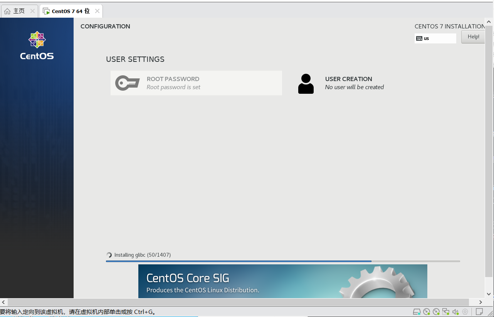
安装完成 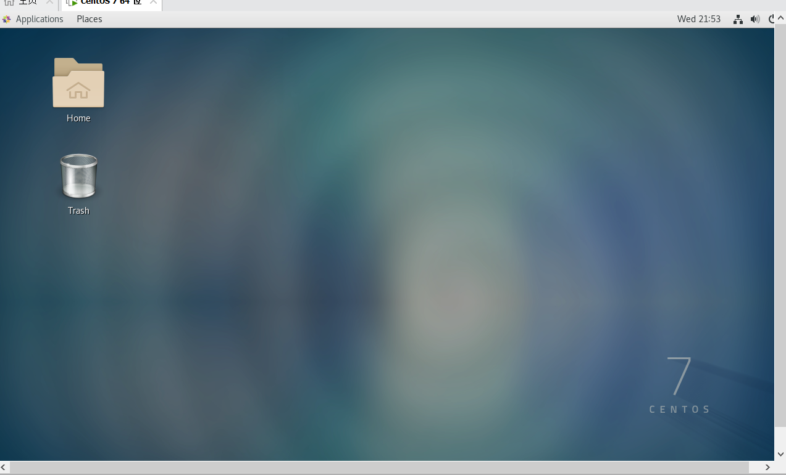
远程连接工具
xshell
FinalShell
其他远程连接软件亦可
下载：Finalshell SSH工具,业界最强大的SSH客户机
查询Linux的IP 使用：ifconfig 指令 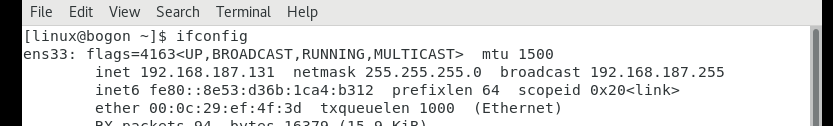
使用软件连接虚拟机 输入IP，端口号，账户密码，进行连接 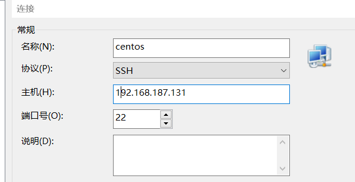 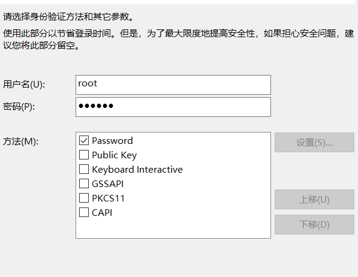
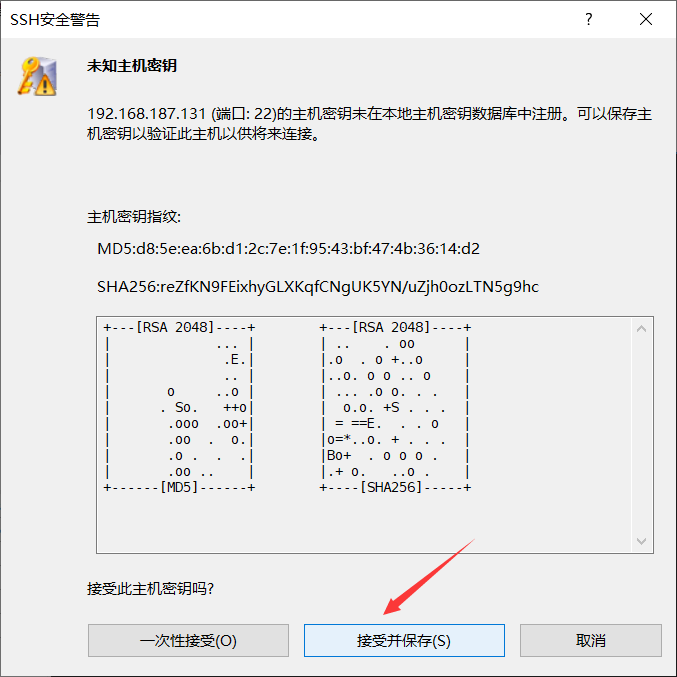
稍等出现此画面即为连接完成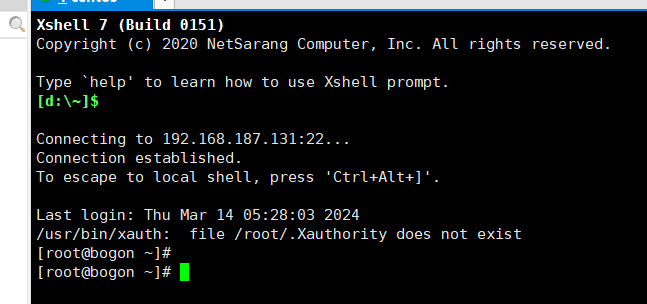
传统获取Linux环境方式时安装完整的虚拟机，如VMware等
使用WSL，可以非常轻量化的得到Linux环境
WSL是windows系统上的Linux子系统
可以在window系统中获得Linux系统，并完全直连计算机硬件，无需通过虚拟机虚拟硬件
WSL不需要下载，在系统中开启即可 开启方法：
控制面板\程序\程序和功能
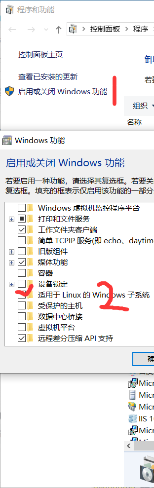 部署ubuntu系统 在微软商店中搜索Ubuntu 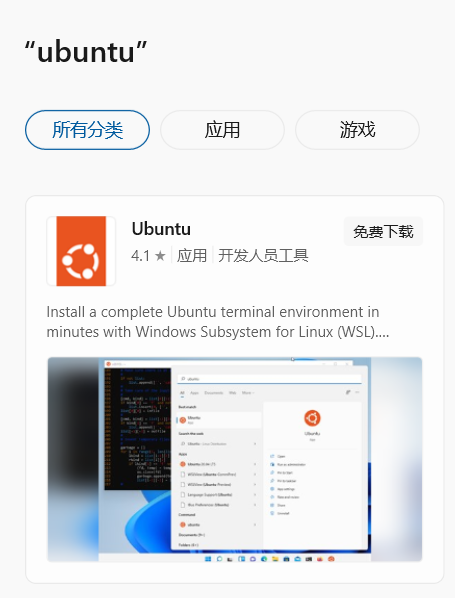
可以使用Windows terminal替换这种方法创建的Ubuntu的控制台窗口
在学习阶段可能损坏Linux操作系统，可以通过虚拟机快照来恢复系统到保存状态 在VMware中可以在：虚拟机→快照→拍摄快照 生成快照，点击恢复快照可以恢复虚拟机到快照状态
Linux的目录是一个树状结构，根目录只有一个
Linux没有盘符概念，只有一个根目录'/',所有文件都在它下面
在Linux系统中用左斜杠‘/’表示层次关系 开头的/表示根目录，中间的/表示层次关系
命令通用格式：command [可选项] [可选参数]
ls命令的作用是列出目录下的内容
语法
xxxxxxxxxx11ls [-a -l -h] [linux路径]不使用选项和参数时，表示以平埔形式列出当前工作目录下的内容
参数 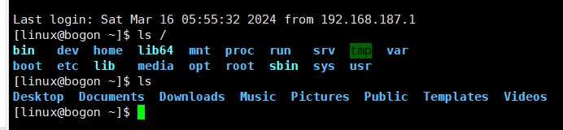 输入目录参数可以查看指定目录下的文件等内容
选项
-a 选项，表示all，即列出全部文件（包含隐藏文件和文件夹） 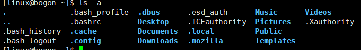
-l选项，表示以列表形式展示内容，并展示更多信息 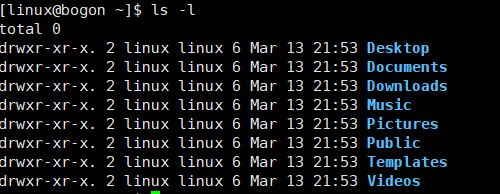
-h 选项：表示以易于阅读的形式，列出文件大小，如：K/M/G -h选项必须搭配-l选项使用 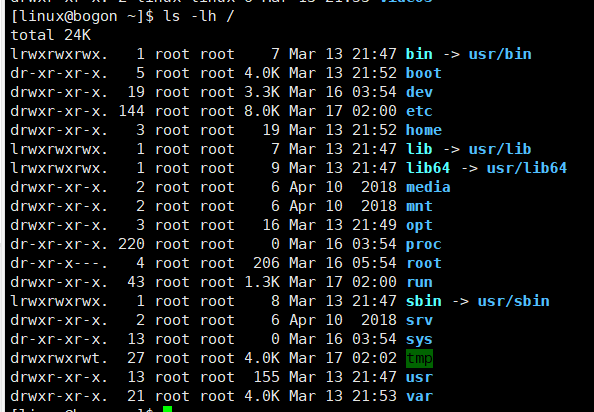
如果同时应用多个选项：ls -al 或 ls -la 或ls -a -l
在Linux中默认用户打开的时home作为工作目录 可以使用cd命令切换工作目录
语法：cd[路径] cd命令如果写参数，表示回到进入指定目录
cd命令如果不写参数，表示回到用户的home目录
通过ls来验证当前的工作目录，是不恰当的 pwd命令可以列出当前工作目录
语法：pwd pwd命令无参数无选项 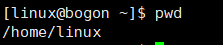
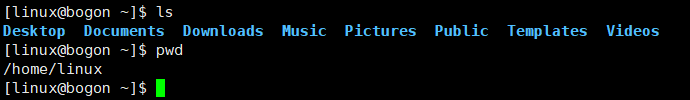
如图：当前路径在/home/linux，如果要切换到Linux中的music目录写法：
xxxxxxxxxx41::相对路径2cd Music3::绝对路径4cd /home/linux/Music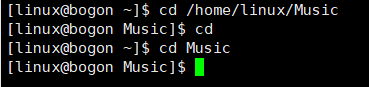
. （一个点）：表示当前目录，cd ./Music 和cd Music效果相同
..（两个点）：表示上一级目录，例如切换到上级目录：cd .. 切换到上两级目录：cd ../..
~（波浪线）：表示home目录：cd ~
更多特殊路径符。参考文档
通过mkdir指令可以创建新的目录（文件夹）
语法：mkdir [-p] Linux路径
参数必须写，表示Linux路径，要创建的文件夹路径，相对路径或绝对路径，特殊路径符均可
-p选项可选，表示自动创建不存在的父目录，适用于连续创建多层的目录
创建一个linuxlearn目录，并切换到该目录下
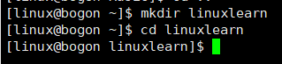 如果不是用-p选项，在创建多层目录时，会报错 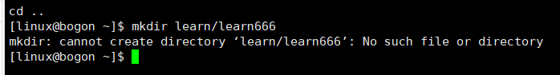
使用-p选项再执行 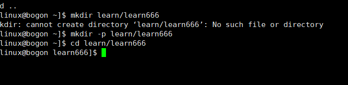
语法：touch [路径] touch命令无选项，参数必填，表示要创建的文件路径。 在learn文件夹下创建一个text.txt文件：
touch ~/learn text.txt
切换到文件夹后再创建
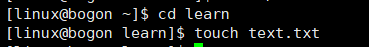
cat命令
语法：cat 文件路径
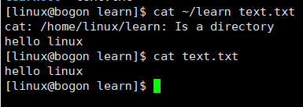
more命令
语法：more 文件路径
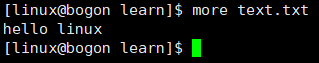
cat和more区别
cat是把文件中的所有内容都显示出来 more内容支持翻页，如果文件内容太多，可以翻页，多页显示 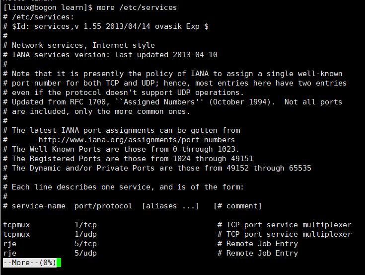
按空格翻页，按q键退出
语法：cp [-r] 参数1 参数2
-r 用于返回值文件夹使用，表示递归
参数1，Linux路径，表示要复制的目标文件或文件夹
参数2，Linux路径，表示要复制到的文件夹
例如：
复制 learn 文件夹下的text.txt文件到 Linuxlearn文件夹中 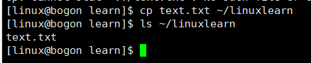
赋值learn文件夹下的learn666到Linuxlearn文件夹 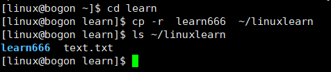
xxxxxxxxxx51[linux@bogon ~]$ cd learn2[linux@bogon learn]$ cp -r learn666 ~/linuxlearn3[linux@bogon learn]$ ls ~/linuxlearn4learn666 text.txt5
语法：mv 参数1 参数2
参数1，Linux路径，表示要移动的文件或文件夹
参数2，Linux路径，表示要移动到的文件夹，如果目标不存在，则进行改名，确保目标存在
例如：
移动linuxlearn文件夹下的learn666文件夹和text.txt文件到learn文件夹
xxxxxxxxxx51[linux@bogon ~]$ mv linuxlearn/text.txt learn/2[linux@bogon ~]$ mv linuxlearn/learn666 learn/3[linux@bogon ~]$ ls learn/4::输出信息learn666 text.txt5
为text文件重命名为text1
xxxxxxxxxx41[linux@bogon learn]$ mv text.txt text1.txt2[linux@bogon learn]$ ls3learn666 text1.txt4
语法：rm [-r -f] 参数1 参数2 ...参数n
和cp指令相同-r是用于删除文件夹
-f表示force，表示强制删除，不会弹出确认信息
普通用户删除不会弹出提示，只有root管理员用户删除内容时才会有提示
参数1，参数2，。。。，参数n表示要删除的文件或文件夹，多个参数用空格分开
rm命令支持通配符，可以用模糊匹配
符号*表示通配符，即匹配任意内容（包含空）
test*表示匹配任意以test开头的内容
*test表示匹配任意以test结尾的内容
*test*表示任意包含test的内容
例如：删除learn文件夹下的learn666文件夹和text.txt文件
xxxxxxxxxx31[linux@bogon learn]$ rm text.txt2[linux@bogon learn]$ rm -r learn6663
which 我们可以通过which命令，查看所使用的一系列命令的程序文件存在哪里 语法：which 要查询的命令 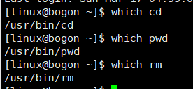
find 可以通过find命令去搜索指定的文件
按文件名搜索(-name) 语法：find 起始路径 -name "被查找的文件名" 被查找的文件名，可以使用通配符进行模糊匹配 例如：查找含有text的文件 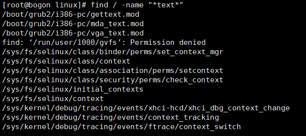
按文件大小查找（-size） 语法：find 起始路径 -size +/- [KMG]
+-号：表示大于小于
n表示大小数字
KMG表示大小单位，k表示kb,m表示mb,g表示gb
例如：
查找大于100MB的文件：find / -size +100M
查找小于10KB的文件：find / -size -10k
grep命令-过滤文件内容
通过grep命令从文件中通过关键字过滤文件行 语法：grep [-n] 关键字 文件路径
-n：可选选项，表示在结果中显示行号
关键字：表示过滤的关键字，带有空格或者其他特殊字符，建议使用“ ”将关键字包裹起来
文件路径： 表示要过滤内容的文件路径，可作为内容输入端口
wc命令-统计内容数量 可以通过wc命令统计文件行数，单词数量 语法：wc [-c -m -l -w]文件路径
-c ：统计bytes数量
-m：统计字符数量
-l：统计行数
-w：统计单词
文件路径：被统计的文件，可作为内容输入端口
查找text1文件中的以上参数
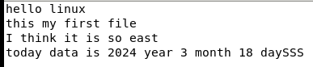
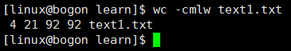
管道符 管道符符号：| 含义：将管道符左侧命令的结果作为右侧命令的输入 管道符可以嵌套多次使用
xxxxxxxxxx71::查找text1文件中含有east的内容2[linux@bogon learn]$ cat text1.txt |grep east3I think it is so east4::查找text1文件中含有east的内容，并输出这句话的单词个数5[linux@bogon learn]$ cat text1.txt |grep east|wc -w667
echo命令 echo命令可以在命令行中输出指定命令。内容复杂时，可以用双引号包围。 语法：echo 输出的内容
带有空格或 \ 等特殊符号，建议用双引号包围例如：在控制台上显示Hello world 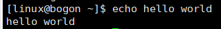
反引号``的使用 用反引号包围的内容会作为命令去执行 例如 echo 'pwd' ——打印pwd结果
tail命令
使用tail命令，可以查看文件尾部内容，跟踪文件的最新更改 语法：tail [-f -num] linux路径
linux路径：表示被跟踪的文件路径
-f：表示持续跟踪
-num：查看尾部多少行，不填默认为10行
重定向符号 符号：>和>>
>：将左侧命令的结果，覆盖写入到符号右侧指定的文件中
>>：将左侧命令的结果，追加写入到符号右侧指定的文件中
例如：将hello world 追加写入到text1.txt文件中 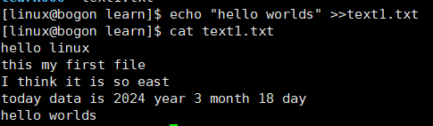
vi/vim编辑器是Linux最经典的文本编辑器。 vim编辑器是vi编辑器的加强版本，兼容vi编辑器的所有指令，不仅能编辑文本，还具有shell程序编辑的功能，可以根据不同颜色的字体哦按段语法的正确性，极大方便了程序设计和编辑
vi/vim编辑器的三种工作模式
命令模式 在命令模式下，所敲的按键 编辑器都识别为命令，以命令驱动执行不同的功能
输入模式 输入模式也就是编辑模式，在此模式下可以对文件内容进行自由编辑
底线命令模式 以：通常用于文件的保存和退出
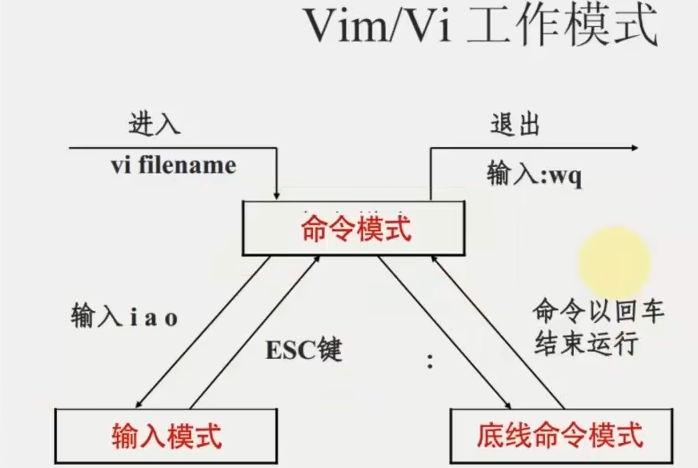
使用vi、vim编辑器编辑文件 vi 文件路径 vim 文件路径
如果文件不存在，此命令会用于编辑新的文件
如果文件存在，此命令用于编辑已有文件
例如：在text1.txt文件中编辑一段话
xxxxxxxxxx71[linux@bogon learn]$ vim tyyvim.txt2[linux@bogon learn]$ ls3learn666 learnvim.txt text1.txt4[linux@bogon learn]$ cat learnvim.txt5这是我学习vim编辑器创建的一个文档6它的内容也是我使用vim编辑器编的7这是它的第三行内容常用命令
| 模式 | 命令 | 描述 |
|---|---|---|
| 命令模式 | i | 在光标位置进入输入模式 |
| 命令模式 | a | 在光标位置之后进入输入模式 |
| 命令模式 | I | 在当前行的开头进入输入模式 |
| 命令模式 | A | 在当前行的结尾进入输入模式 |
| 命令模式 | o | 在当前光标的下一行进入输入模式 |
| 命令模式 | 0 | 在当前光标的上一行进入输入模式 |
| 输入模式 | esc | 在任何情况下输入esc回到命令模式 |
语法：su [-] [用户名]
表示是否在切换用户后加载环境变量
用户名：表示要切换的账户，默认切换root
切换用户后，可以通过exit命令退回上一个用户，也可以用：ctrl+d
sudo命令 使用sudo命令，可以为普通命令授权，临时以root身份执行 语法：sudo 其他命令 注意：不是所有用户都有权限使用sudo指令，需要对普通用户配置sudo认证
配置sudo认证
切换到root用户，执行 visudo命令
在添加 ：用户名 ALL=(ALL) NOPASSWD:ALL
配置完成后再使用sudo指令即可再非home目录进行操作
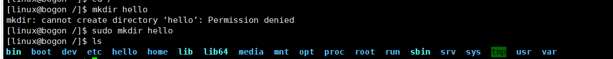
Linux系统中可以：
配置多个用户
配置多个用户组
用户可以加入多个用户组
Linux中的权限管控分为两个级别
针对用户的权限控制
针对用户的权限控制
用户，用户组管理命令需要在root用户下执行
用户组操作
创建用户组 语法：groupadd 用户组名
删除用户组 语法：groupdel 用户组名
用户操作
创建用户 语法：useradd [-g -d] 用户名 -g：指定用户组，不指定时会创建同名组并自动加入，指定-g需要已经存在，若已存在同名组，必须使用-g -d：指定用户的home路径，不指定时，默认存在：/home/用户名
删除用户 语法：userdel [-r] -r：删除用户的home目录
查看用户所属组 id [用户名] 如果不输入用户名参数，则查询自身所属
修改用户组 语法：usermod -aG 用户组 用户名 该指令可以将某用户加入某个用户组中
getent指令：可以查看当前系统中有哪些用户/组 查看用户语法：genten passwd 查看组语法：genten group
通过ls -l查看内容，并显示权限细节
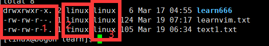
序号1：文件，文件夹的权限控制信息 序号2：文件，文件夹所属的用户 序号3：文件，文件夹所属的用户组
权限细节分为10个槽位
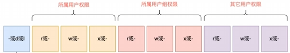
第一个槽位：
“-” 表示文件
d表示文件夹
l 表示软链接
例如：drwxr-xr-x 解释
d这是一个文件夹
所属用户的权限是：有r 有w 有x
用户组权限是：有r 无w 有x
其他用户权限：有r 无w 有x
r：表示读权限 w：表示写权限 x：表示执行权限
注意：！文件和文件夹只有所属用户或root用户可以修改
chmod命令
语法：chmod [-R] 权限 文件/文件夹 -R: 文件夹中的文件应用相同的操作
例如： chmod u=rwx g =rx o=x 1.txt 其中：u表示user所属用户权限，g表示group组权限，o表示other用户权限
chmod -R u=rwx g =rx o=x wenjianjia 对文件夹及文件进行权限修改
数字表示权限 令：r=4，w=2，x=1 可以得到八种权限组合如下： 0：无任何权限 --- 1：仅有x权限 --x 2：仅有w权限 -w- 3：有wx权限 -wx 4：仅有r权限 r-- 5：有rx权限 r-x 6：有rw权限 rw- 7：有全部权限 rwx
chown命令 注意：普通用户无法使用这条命令修改为其他用户或组，只能使用root用户去执行 使用chown命令，可以修改文件，文件夹所属的用户和用户组
语法：chown [-R] [用户] [:] [用户组] 文件或文件夹
-R：对文件夹中的全部内容应用相同规则
用户：修改所属用户
用户组：修改所属用户组
：用于分割用户和用户组
ctrl+c（强制停止）
Linux程序在运行时或命令输入错误时，可以使用ctrl+c强制停止
ctrl+d（退出或登出） 可以退出账户登录或退出特定程序的专属界面 注意：不能用于退出vi/vim编辑器
历史命令搜索
history 使用history命令可以查看先前执行过的命令
通过！命令前缀自动执行上次匹配前缀的命令 例如：之前执行过python命令，当再次执行时，可以输入!py即可，如果使用过的命令时间较长，则不适用次命令
ctrl+r 搜索匹配历史命令
如果命令时间较远，可以使用ctrl+r匹配 搜索到需要的命令按回车执行，按左右键得到此命令
光标移动快捷键
ctrl+a 跳到命令开头
ctrl+e 跳到命令结尾
ctrl+键盘左 向左跳一个单词
ctrl+键盘右 向右跳一个单词
yum命令 yum:RPM包软件管理器，用于自动化安装配置Linux软件，并可以自动解决依赖问题 语法：yum [-y] [install | remove | search] 软件名称
-y：自动确认，无需手动确认安装或卸载过程
install：安装
remove：卸载
search：搜索
yum命令需要root权限，且需要联网 例如 ：使用yum命令在Linux系统中安装wget程序 yum -y install wget
Linux系统中很多软件可以使用systemctl命令控制软件的：启动，停止，开机自启。能有被该命令管理的软件，一般也称为：服务
语法：systemctl start(开启) | stop(关闭) | status(查看状态) | enable(开启开机自启) | disable(关闭开机自启) 服务名
系统内置很多服务，比如
NetworkManager，主网络服务
network，副网络服务
firewalld，防火墙服务
sshd，ssh服务
在Linux系统中创建软连接，可以将文件或文件夹连接到其他位置 类似于Windows系统中的快捷方式 语法：ln -s 参数1 参数2
-s：创建软连接
参数1：被链接的文件或文件夹
参数2：要链接去的目的地
date命令 通过date命令可以查看系统时间 语法：date [-d] [+格式化字符串] -d 按照给定的字符串显示日期，一般用于日期计算 格式化字符串：通过特定的字符串标记，来控制日期格式
%Y：年
%y：年最后两位
%m：月
%d：日
%H：时
%M：分
%S：秒
%s：1970-0-0 0 0 0起至现在的秒数
例如：要按2000-01-01 00:00:00显示 date "+%Y-%m-%d %H:%M:%S"
date命令进行日期加减 -d可以按照给定的字符串显示日期 支持的时间标记：
year年
Month月
day天
hour时
Minute分钟
second秒
-d可以配合格式化字符串一起使用
例如：将当前时间+1年 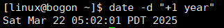
修改Linux时区
使用root权限执行以下命令
xxxxxxxxxx21rm -f /etc/localtime2sudo ln -s /usr/share/zoneinfo/Asia/Shanghai将系统自带的localtime文件删除，并将shanghai时区文件链接到localtime
ntp程序 可以通过ntp程序自动校准时间 安装ntp程序：
xxxxxxxxxx11yum -y install ntp启动并设置开机自启
xxxxxxxxxx21systemctl start ntpd2systemctl enable ntpd也可以手动校准（root）
xxxxxxxxxx11ntpdate -u ntp.aliyun.comIP
查询本机IP 地址：ifconfig，若无法使用该命令可以 安装：yum -y install net-tools
特殊IP地址 127.0.0.1
这个IP指代本机
0.0.0.0
可以用于代指本机
可以在端口绑定中确定绑定关系
在一些IP地址限制中，表示所有IP的意思，如放行规则中设置0.0.0.0，表示放行所有IP访问
主机名
修改Linux系统的主机名
xxxxxxxxxx41::查看主机名2hostname3::修改主机名4hostnamectl set-hostname 主机名固定虚拟机IP
在VMware中配置IP地址网关和网段
在Linux系统中手动修改配置文件，固定IP
ping命令 可以使用ping命令，检查指定的网络服务器是否是可联通状态 语法：ping [-c num] ip或主机名 -c：检查次数，不使用将无限次数检查 ip或主机名：被检查的服务器的IP地址或主机名
wget命令 是非交互式的文件下载器，可以在命令行内下载网络文件 语法：wget [-b] url -b：后台下载，会将日志写入到当前工作目录的wget-log文件 url：下载链接
curl命令 curl可以发送http网络请求，可用用于下载文件，获取信息等 语法：curl [-o] url -o：用于下载文件，当url是下载链接时，可以使用此选项保存文件 url：要发起请求的网络地址
端口 端口是设备和外界通讯交流的出入口，可分为物理端口和虚拟端口
查看端口占用
使用namp命令，安装namp：yum -y install nmap 语法：namp 被查看的IP地址
使用netstat命令，查看指定端口占用情况 语法：netstat -anp | grep 端口号，安装netstat：yum -y install net-tools
每个进程都有一个独有的进程ID
查看进程 通过ps命令查看进程信息 语法：ps [-e -f]
-e：显示全部进程 -f：以完全和石化形式展示信息
关闭进程 使用kill命令可以关闭进程 语法：kill [-9] 进程id -9：表示强制关闭进程
查看系统资源占用 通过top命令查看cpu，内存等使用情况，类似于任务管理器 默认5秒刷新一次 语法：top 按q或ctrl+c退出 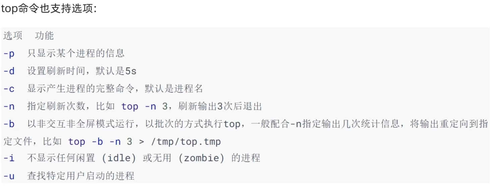 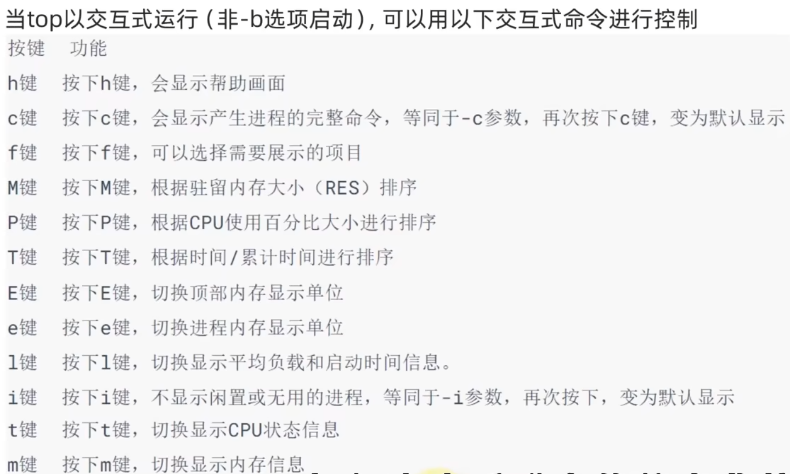
磁盘信息监控 使用df命令，可以查看硬盘使用情况 语法：df [-h] -h：更人性化的单位显示
rz,sz命令 可以通过rz,sz命令进行文件传输 安装yum -y install lrzsz
sz命令进行下载 语法：sz 要下载的文件
rz命令进行上传
如果上传大文件可以使用插件上传，速度较快
tar命令 Linux常用的压缩格式
.tar：归档文件，即将文件组装到一个tar文件内，并没有太多体积压缩。
.gz：使用算法将文件压缩到一个文件内，可以极大减小文件体积。
语法：tar [-c -v -x -f -z -C] 参数1 参数2......参数n
-c，创建压缩文件，用于压缩模式
-v，显示压缩、解压过程，用于查看进度
-x，解压模式-
f，要创建的文件，或要解压的文件,-f选项必须在所有选项中位置处于最后一个
-z，gzip模式，不使用-z就是普通的tarball格式
C，选择解压的目的地，用于解压模式
zip命令 可以使用zip命令，将文件压缩为zip格式 语法：zip [-r] 参数1 参数2...参数n -r：被压缩的文件含有文件夹时需要使用此参数
unzip解压 语法：unzip [-d] 参数
-d：要解压去的目的文件夹
参数：要解压的zip文件
MySQL5.7安装 [第五章-02-MySQL5.7在CentOS安装单机软件]哔哩哔哩bilibili
MySQL8.0安装 资料P45
资料P48
tomcat是一个servlet容器，可以实现web网站托管
将JDK上传到linux 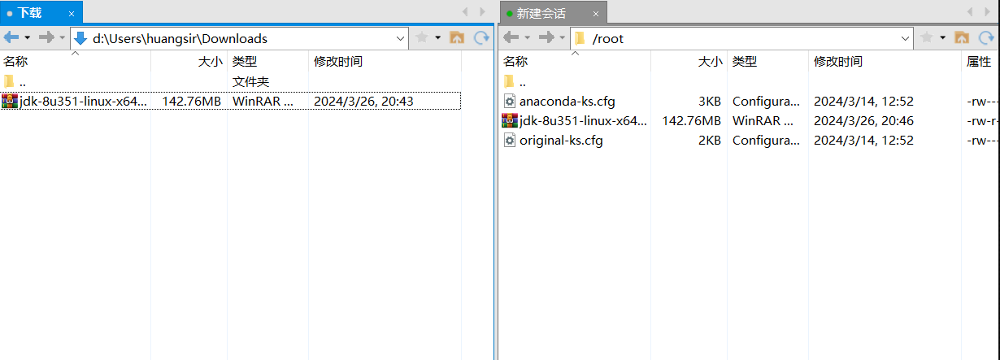
创建文件夹，将文件解压到文件夹 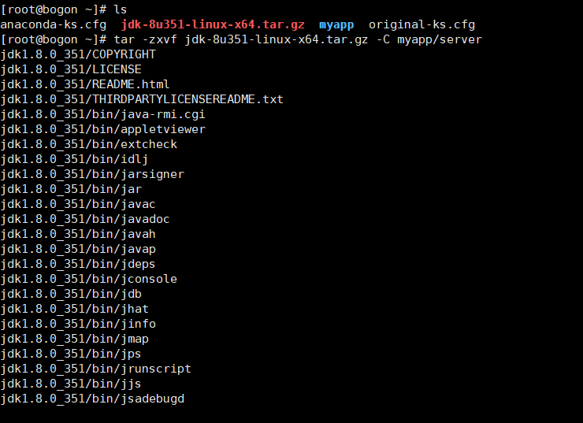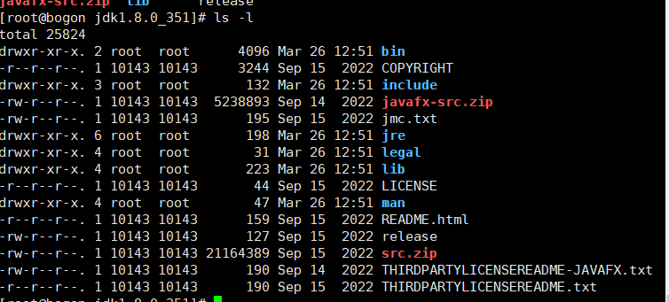
配置环境变量 vim /etc/profile
编辑 export java_home=/root/myapp/server/jdk1.8.0_351 export PATH=PATH:$java_home/bin 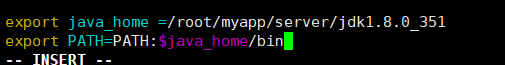
source /etc/profile 使刚才的环境变量生效
资料P49
资料P50
资料P51
资料P52
本文档到此结束
未更新